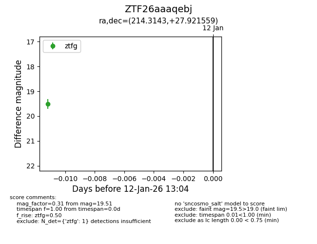
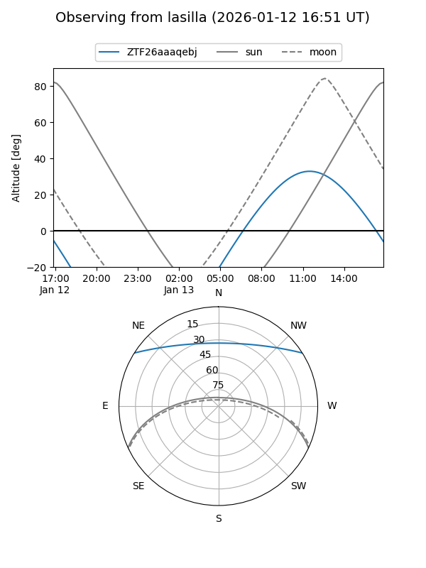
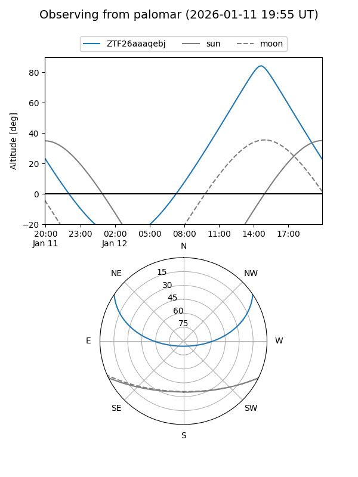

ZTF26aaaqebj
Target ZTF26aaaqebj at 2026-01-12 13:05
Aliases and brokers:
FINK: link
Lasair: link
ALeRCE: link
alt names
ZTF26aaaqebj (ztf,fink_ztf)
Coordinates:
equatorial (ra, dec) = 214.3143,+27.92156
equatorial (HMS+DMS) = 14:17:15.44,+27:55:17.61
galactic (l, b) = (40.2952,+70.98135)
Flags:
Photometry:
last ztfg=19.51
1 ztfg detections
Lightcurve

Visibility


Additional plots